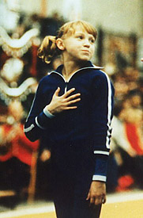

Elena Naimushina (USSR)
1980 World Cup B Champion
|

Medal Total
- Olympic Games: 1 Gold
- World Championships: 1
Silver
- World Cup: 1 Gold, 1
Silver
|
Elena was born on November 19,
1964, in Krasnoyarsk. Her older sister did gymnastics and Elena followed her to the gym at age 5. Her coach was Valentin Shevchuk (who also coached
Soviet national team members Tatiana Godenko and Viktoria Ivkova) at Dynamo
Krasnoyarsk. After the Olympics, she had injuries and spats with her coach. At age 18, she left home and moved to Riga with her future husband, Andris (a world-class cyclist). She had her first son, Tom, a year later, with second son Philip arriving a year after that. Daughter Linda was born in 1995. Lena divorced and returned to Russia with her daughter, while her sons chose to remain in Latvia. She died on March 14, 2017.
Competition Results
1976
Jr. USSR Cup (Candidate for Master of Sport): 1st AA
- 1977
- Jr. HUN-USSR Dual Meet: 1st Team, 3rd UB
Jr. USSR Championships: 3rd Team, 3rd AA, 2nd B,
3rd V, 3rd FX
Jr. USSR-GDR Dual Meet: 1st Team, 6th AA
Jr. USSR-ITA Dual Meet: 1st Team, 2nd AA
- Jr. USSR-TG Russelheim (FRG) Dual Meet: 1st Team, 3rd
AA
- RFSFR Youth Championships: 4th AA
-
- 1978
- Chunichi Cup: 2nd AA
- Cottbus International: 5th AA, 1st V, 4th B, 3rd FX
Moscow News: 7th AA
RSFSR Championships: 1st AA, 1st UB
- RSFSR-CSSR Dual Meet: 1st Team, 1st AA, 1st B, 1st FX, 3rd V
USSR Championships: 3rd AA
-
- 1979
- American Cup: 6th AA
- Catania Cup: 2nd Team, 2nd AA
- Champions All: 2nd AA
- European Championships: 17th AA
USSR Championships: 7th AA, 3rd FX
- USSR Cup: 2nd AA
- USSR Spartakiade: 1st Team, 16th AA
- World Championships: 2nd Team, 13th AA
-
- 1980
- Moscow News: 3rd AA, 1st B, 2nd UB, 3rd FX
- Olympic Games: 1st Team
- USSR Championships: 4th AA, 1st B, 2nd FX,
7th UB
- USSR Cup: 3rd AA
- World Cup: 7th AA, 1st B, 2nd FX
-
- 1981
- Milan Grand Prix: 1st AA
- USSR Cup: 5th AA, 1st FX, 3rd B
This page was last updated on June 13, 2026.
© Gymn Forum